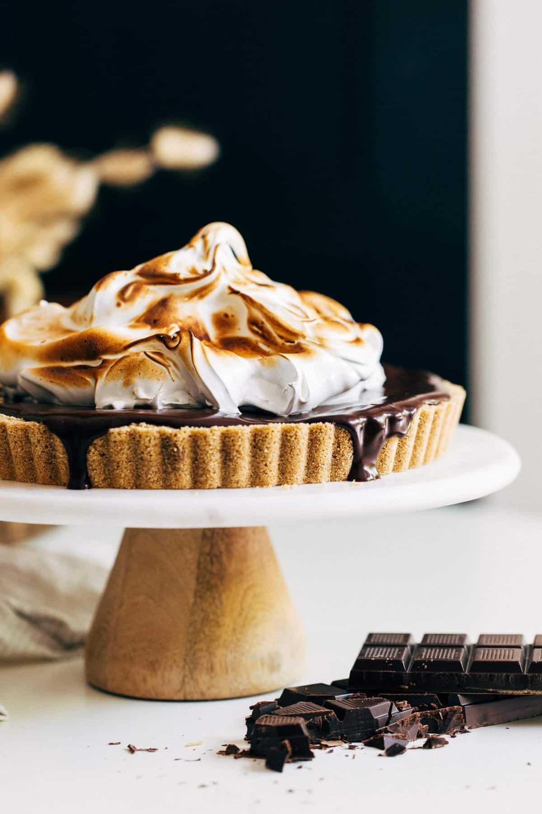

No Bake S'mores Cheesecake
A little piece of childhood, without the sticky fingers or the mess. This s’mores cheesecake brings together everything you loved about sitting around the fire — buttery graham crackers, creamy chocolate, and toasted marshmallows — in one easy, indulgent dessert. No campfire required, just all the nostalgia in every bite.
Ingredients
Graham Craker Crust
- 2 cups (220g) finely ground graham cracker
- 1/4 cup (50g) packed light brown sugar
- 1/2 cup (112) unsalted butter, melted
- 16 oz full fat cream cheese, room temp
- 1 cup (110g) powdered sugar
- 4 oz white chocolate, finely chopped
- 4 oz semisweet chocolate, finely chopped
- 1/2 cup (120g) heavy whipping cream
- 4 Large eggs whites.
- 1 Cup (200g) of granulated sugar
- ½ tsp of cream of tarter
- 1 tsp of vanilla extract
No Bake Cheesecake
Chocolate Ganache
Marshmallow Meringue
Instuctions
Graham Cracker Crust
- Mix together all of the ingredients and press into a 9inch tart pan, covering the bottom and up the sides. Freeze the crust while you make the cheesecake filling.
- Using a mixer or by hand with a fork, mash and mix together the cream cheese and sugar until combined. Melt the white chocolate in the microwave in 30 second intervals until smooth, about 60 seconds total. Pour in the white chocolate and (if mixing by hand) use a whisk to mix smooth.
- Spread into the chilled crust and refrigerate for at least 3 hours or overnight. If chilling overnight, cover the pan.
- Once chilled, make the chocolate topping.
- Add the chopped chocolate to a medium bowl and the heavy cream to a glass measuring cup. Heat the heavy cream in the microwave for about 1 minute or until bubbling. Pour the hot cream over the chocolate and let it sit for 30 seconds, then whisk until smooth and glossy.
- Remove the cheesecake from the tart pan and place it on a serving tray. Pour the ganache on top and allow it to completely cover the surface and drip down the sides.
- Place the cheesecake in the refrigerator while you make the meringue.
- Add the egg whites and sugar to the heat safe bowl of a stand mixer. If you don’t have a stand mixer, you can use use any heat safe bowl.
- Place the bowl over a pot of simmering water (filling the pot about 1/3 of the way full). Make sure the bowl doesn’t touch the water and don’t let the water come to a boil. Whisk occasionally until the sugar is completely dissolved, about 5 minutes on a gas top and 10 minutes on electric. To test, rub some of the mixture between your fingers. If you still feel sugar granules, keep it over the heat until you can no longer feel those granules.
- Transfer the bowl to the stand mixer with the whisk attachment (or use a hand mixer) and whip on high speed. As it turns white and opaque, add in the cream of tartar and vanilla. Keep whipping until it’s thick and glossy. To test, dunk the whisk into the bowl and pull it out. When you turn it right side up, the meringue should stand straight with a slight curl on the end (like a Dairy Queen ice cream cone).
- Dollop the meringue on top of the chilled cheesecake. Use a kitchen torch to lightly toast the top (if you don’t have one, you can omit this step). Now slice and enjoy!